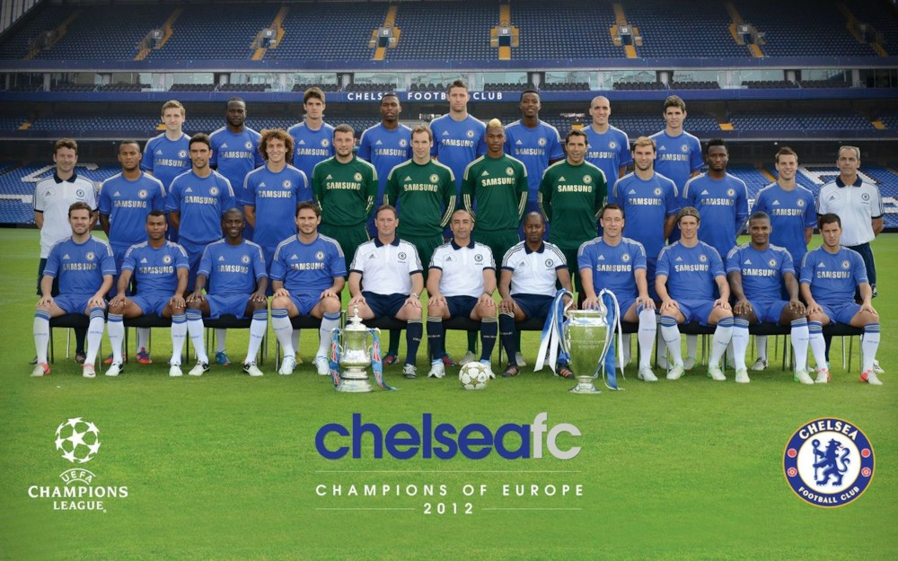

지난 시즌 챔피언스 리그 우승팀으로서의 자존심은 로만 구단주 부임 이후 첫 챔피언스 리그 16강 탈락으로 빛이 바랬다. 그것도 챔피언스 리그 개편 이후 유일한 전 대회 우승팀의 16강 진출 실패라는 기록까지 남겼다. 그것뿐만 아니라 커뮤니티 실드, 클럽 월드컵, 리그 컵, FA 컵, 프리미어 리그에서도 모두 우승에 실패하며 기운만 빼고 무너지는게 아닌가 싶었으나 어찌 어찌 유로파 리그를 우승하며 체면치레는 했다.
'뮌헨의 기적'의 주인공 로베르토 디 마테오는 감독 대행에서 정식 감독 계약을 맺었으나[39] 유벤투스전 0-3 완패 이후 새벽 4시에 초고속으로 경질되었다. 세간은 물론 첼시 팬들 사이에서도 논란이 들끓었음은 당연하다. 다만 로만은 이전부터 감독 물갈이가 잦다는 지적을 받아 왔기 때문에 디 마테오에 대한 동정 여론이 좀 더 힘을 얻었다.
미국 투어까지 포함하면 12-13 시즌 동안 무려 71경기를 치르게 되는 것인데,노예가 따로 없구만 대회란 대회는 다 참가하는 식으로 선수들을 혹사시킨 감이 없지 않다. 이런 체력적인 부담이 각종 대회에서의 우승 실패에 한 몫했음을 부정할 수 없을 듯. 근데 이것도 핑계라면 핑계